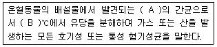
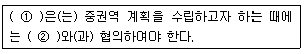
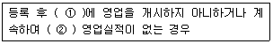

수질환경산업기사 (2010-05-09 기출문제)
1과목: 수질오염개론
1. 하천수의 수질관리 모델인 Streeter-Phelps Model 에 관한 설명으로 옳은 것은?
- 하천과 대기의 열복사 및 열교환이 고려된다.
- 점오염원이 아닌 비점오염원의 오염부하량을 고려한다.
- 유기물의 분해에 따른 DO 소비와 재폭기를 고려한다.
- 유속, 수심, 조도계수에 의해 확산계수를 결정한다.
(정답률: 62%)

2. 다음 중 지하수의 수질특성으로 옳지 않은 것은?
- 세균에 의한 유기물 분해가 주된 생물 작용이다.
- 지표수에 비하여 경도가 높은 편이다.
- 국지적인 환경조건의 영향이 적다.
- 자정속도가 느리다.
(정답률: 95%)
3. 박테리아의 경험식은 C5H7O2N이다. 2kg의 박테리아를 완전히 산화시키려면 몇 kg의 산소가 필요한가? (단, 박테리아는 최종적으로 CO2, H2O, NH3 로 분해됨)
- 2.61kg
- 2.72kg
- 2.83kg
- 2.94kg
(정답률: 74%)
4. 반응조에 주입된 물감의 10%, 90%가 유출되기 까지의 시간은 t10, t90 이라 할 때 Morrill지수는 t90/t10 으로 나타낸다. 이상적인 Plug flow인 경우의 Morrill지수 값은?
- 1 보다 작다.
- 1이다.
- 1 보다 크다.
- 0이다.
(정답률: 84%)
5. 해수에 관한 설명으로 옳은 것은?
- 해수의 밀도는 담수 보다 작다.
- 염분은 적도해역에서 낮고 남, 북 양극 해역에서 다소 높다.
- 해수의 Mg/Ca비가 담수의 Mg/Ca비 보다 크다.
- 수심에 따라 해수 주요 성분 농도비의 차이는 크다.
(정답률: 56%)
6. 0.02N의 초산이 8% 해리되어 있다면 이 수용액의 pH는?
- 3.2
- 3.0
- 2.8
- 2.6
(정답률: 79%)
7. 어떤 하천의 환경기준이 BOD 3mg/L 이하이고 현재 BOD는 1mg/L 이며 유량은 100000m3/day이다. 하천주변에 돼지 사육단지를 조성하고자 하는데 환경기준치 이하를 유지시키기 위해서는 몇 마리까지 사육을 허가할 수 있겠는가? (단, 돼지사육으로 인한 하천의 유량증가는 무시하고 돼지 1마리당 BOD 배출량은 0.4kg/d 로 한다)
- 500마리
- 1000마리
- 1500마리
- 2000마리
(정답률: 50%)
8. 연안해역에서 적조현상의 원인이 되는 조건과 가장 거리가 먼 것은?
- 수온이 높을 때
- 햇빛이 강할 때
- 영양염류가 과다 유입될 때
- 염분농도가 높을 때
(정답률: 74%)
9. 농업용수 수질의 척도로 사용되는 SAR를 구하는데 포함되지 않는 항목은?
- Na
- Mg
- Ca
- Fe
(정답률: 70%)
10. 탈산소계수 K1 이 0.1/day인 어느 물질의 BOD5가 200mg/L 이라면 BOD2는? (단, BOD 소비공식은 상용대수를 사용한다. )
- 135mg/L
- 124mg/L
- 114mg/L
- 108mg/L
(정답률: 58%)
11. 미생물의 종류를 분류할 때 에너지원에 따라 분류된 것은?
- Autotroph, Heterotroph
- Phototroph, Chemotroph
- Aerotroph, Anaerotroph
- Thermotroph, Psychroph
(정답률: 50%)
12. 남조류(Blue Green Algae)에 관한 설명과 가장 거리가 먼 것은?
- 부영양화에서 주로 문제가 된다.
- 편모와 엽록체 내에 엽록소가 있다.
- 세포내 기포의 발달로 수표면에 밀집되는 특성이 있다.
- 세포합성을 위해 공기를 통한 질소고정을 할 수 있다.
(정답률: 45%)
13. 여름철 정체 수역에서 발생되는 성층현상에서 수온약층(Thermocline)의 위치는?
- 수표면과 표수층 사이
- 표수층 내 위쪽
- 심수층 내 아래쪽
- 표수층과 심수층 사이
(정답률: 57%)
14. 호기성 및 혐기성 세균에 의한 산화반응에서 생성되는 최종산물 중 공통적으로 발생하는 물질로 가장 적절한 것은?
- 메탄
- 유기산
- 황화수소
- 이산화탄소
(정답률: 58%)
15. BOD가 230mg/L, 배수량이 2500m3/일의 생활오수를 BOD 오탁부하량이 173kg/일이 되게 줄이려면 몇 %의 BOD를 제거해서 하천 수로 방류시켜야 하는가?
- 80%
- 75%
- 70%
- 65%
(정답률: 48%)
16. 물 100g에 30g의 NaCl을 가하여 용해시키면 몇 %(W/W)의 NaCl 용액이 조제되는가?
- 23%
- 27%
- 30%
- 33%
(정답률: 45%)
17. 1차 반응에 있어 반응 초기의 농도가 100mg/L이고, 반응 4시간 후에 10mg/L로 감소 되었다. 반응 3시간 후의 농도(mg/L)는?
- 17.8
- 21.6
- 24.3
- 28.2
(정답률: 63%)
18. 어떤 하천수의 수온은 10℃ 이다. 20℃의 탈산소계수 K(상용대수)가 0.15/day 일 때 최종 BOD에 대한 BOD5의 비(BOD5/최종BOD)는? (단, KT=K20×1.047T-20))
- 0.53
- 0.66
- 0.74
- 0.87
(정답률: 50%)
19. BOD 농도가 200mg/L, 유량이 1000m3/day인 폐수를 처리하여 BOD 4mg/L, 유량 50000m3/day인 하천에 방류했을 경우 합류지점의 BOD 농도는? (단, 폐수는 95% 처리 후 방류하며 합류지점에서는 완전 혼합 되었다고 한다.)
- 4.12mg/L
- 4.32mg/L
- 4.62mg/L
- 4.88mg/L
(정답률: 44%)
20. 0.1N NaOH 용액의 농도는 몇 %인가? (단, Na : 23)
- 2
- 4
- 0.2
- 0.4
(정답률: 32%)
2과목: 수질오염방지기술
21. 다음 액체염소의 주입으로 생성된 유리염소, 결합잔류염소의 살균력이 바르게 나열된 것은?
- HOCl ＞ Chloramines ＞ OCl-
- HOCl ＞ OCl- ＞ Chloramines
- OCl- ＞ HOCl ＞ Chloramines
- OCl- ＞ Chloramines ＞ HOCl
(정답률: 77%)
22. 정수시설중 취수시설인 침사지 구조에 대한 내용으로 옳은 것은?
- 표면 부하율은 2~5m/min을 표준으로 한다.
- 지내 평균유속은 30cm/s 이하를 표준으로 한다.
- 지의 상단높이는 고수위보다 0.6~1m의 여유고를 둔다.
- 지의 유효수심은 2~3m를 표준으로 하고 퇴사심도는 1m 이하로 한다.
(정답률: 52%)
23. 막분리 공정 중 선택적 투과막을 적용하는 '투석'의 추진력은?
- 농도차
- 기전력차
- 정수압차
- 압력차
(정답률: 47%)
24. 어떤 산업폐수를 중화처리하는데 NaOH 0.1% 용액 40mL가 필요 하였다. 이를 0.1% Ca(OH)2로 대체할 경우 몇 mL가 필요한가? (단, Ca : 40)
- 20
- 28
- 32
- 37
(정답률: 39%)
25. 2000명이 살고 있는 지역에서 1일에 BOD 150kg이 하천으로 유입되고 있다. 가정하수로 1인당 1일 BOD 50g 이 배출된다면 이 하천의 유입 상태를 가장 적절하게 나타낸 것은?
- 가정하수만 유입되고 있다.
- 가정하수와 폐수가 유입되고 있다.
- 가정하수와 지하수가 유입되고 있다.
- 가정하수와 우수가 유입되고 있다.
(정답률: 62%)
26. 어떤 공장의 폐수량 500m3/day, BOD 1000mg/L, N과 P는 없다고 가정하면 활성슬러지처리를 위해서 필요한 (NH4)2SO4의 양은? (단, BOD:N:P=100:5:1 이라 가정한다.)
- 118 kg/day
- 128 kg/day
- 138 kg/day
- 148 kg/day
(정답률: 17%)
27. 1000m3/day의 종말침전지 유출수에 48.6kg/day의 비율로 염소를 주입시킨 결과 잔류염소 농도가 1.8mg/L 였다면 이 폐수의 염소 요구량은?
- 18.3mg/L
- 24.7mg/L
- 32.5mg/L
- 46.8mg/L
(정답률: 29%)
28. 수중에 있는 암모니아를 탈기하는 방법에 대한 설명으로 옳지 않은 것은?
- 탈기 전 pH를 낮추어 N2 형태로 존재하게 한다.
- 탈기 된 유출수의 pH는 높다.
- 암모니아 유출에 따른 주변의 악취문제가 유발될 수 있다.
- 동절기에는 제거효율이 현저히 저하된다.
(정답률: 29%)
29. 하수처리에서 자외선 소독의 장점에 해당하지 않은 것은?
- 비교적 소독비용이 저렴하다.
- 성공적 소독 여부를 즉시 측정할 수 있다.
- 안전성이 높고 요구되는 공간이 적다.
- 대부분의 virus, spores, cysts 등을 비활성화 시키는데 염소보다 효과적이다.
(정답률: 43%)
30. 활성 슬러지공법으로 운전되고 있는 어떤 하수처리장으로부터 매일 2000kg(건조고형물기준)의 슬러지가 배출되고 있다. 이 슬러지를 중력 농축시켜 함수율을 97%로 한 뒤 호기성 소화방식으로 처리하고자 한다. 농축된 슬러지의 비중이 1.03 이라 할 때 소화조의 수리학적 체류시간을 10 day로 하면 소화조의 용적은?
- 약 450m3
- 약 650m3
- 약 850m3
- 약 1⑤0m3
(정답률: 43%)
31. 폐유를 함유한 공장폐수가 있다. 이 폐수에는 A, B 두 종류의 기름이 있는데 A의 비중은 0.90 이고 B의 비중은 0.92 이다. A와 B의 부상 속도비(VA/VB)는? (단, stokes법칙 적용, 물의 비중은 1.0 이고 직경은 동일하다. )
- 1.15
- 1.25
- 1.35
- 1.45
(정답률: 28%)
32. 다음 특성을 갖는 폐수를 활성슬러지법으로 처리할 때 포기조내의 MLSS 농도를 일정하게 유지하려면 반송비는 얼마로 유지하여야 하는가? (단, 유입원수의 SS는 200mg/L, 포기조내의 MLSS는 2000mg/L, 반송슬러지 농도는 8000mg/L이며, 포기조 내에서 슬러지 생성 및 방류수 중의 SS는 무시한다. )
- 20%
- 30%
- 40%
- 50%
(정답률: 38%)
33. 부유물질의 농도가 300mg/L인 1000톤의 하수의 1차 침전지(체류시간 1시간) 부유물질 제거율은 60%이다. 체류시간을 2배 증가시켜 제거율이 90%로 되었다면 체류시간을 증대시키기 전과 후의 슬러지 발생량(m3)의 차이는? (단, 하수비중 : 1.0, 슬러지비중 : 1.0, 슬러지함수율 95% 기준)
- 1.2m3
- 1.4m3
- 1.6m3
- 1.8m3
(정답률: 12%)
34. 생물학적 하수 고도처리공법인 A/O 공법에 대한 설명으로 옳지 않은 것은?
- 사상성 미생물에 의한 벌킹이 억제되는 효과가 있다.
- 무산소조에서 탈질이 이루어진다.
- 혐기반응조의 운전지표로 산화 환원 전위를 사용할 수 있다.
- 처리수의 BOD 및 SS 농도를 표준 활성슬러지법과 동등하게 처리할 수 있다.
(정답률: 46%)
35. SS 200mg/L, 폐수량 2500m3/day 의 폐수를 활성슬러지법으로 처리하고자 한다. 포기조 내의 MLSS 농도가 2000mg/L, 포기조 용적 1000m3 이면 슬러지 일령은?
- 2day
- 4day
- 6day
- 8day
(정답률: 48%)
36. 어떤 폐수를 활성슬러지법으로 처리하기 위하여 실험을 행한 결과, BOD를 50% 제거하는데 4시간30분의 폭기 시간이 걸렸다. BOD의 감소속도가 1차 반응속도에 따른다면 BOD를 90% 까지 제거하는 데 필요한 폭기 시간은?
- 약 9시간
- 약 11시간
- 약 13시간
- 약 15시간
(정답률: 32%)
37. 정수처리시설 중 완속여과지에 관한 설명으로 옳지 않은 것은?
- 완속여과지의 여과속도는 15~25m/day를 표준으로 한다.
- 여과면적은 계획정수량을 여과속도로 나누어 구한다.
- 완속여과지의 모래층의 두께는 70~90cm를 표준으로 한다.
- 여과지의 모래면 위의 수심은 90~120cm를 표준으로 한다.
(정답률: 24%)
38. BOD 300mg/L, 유량 2000m3/day의 폐수를 활성슬러지법으로 처리할 때 BOD 슬러지부하 0.5kgBOD/kgMLSSㆍday, MLSS 2000mg/L로 하기 위한 포기조의 용적은?
- 300m3
- 400m3
- 500m3
- 600m3
(정답률: 45%)
39. 포기조 내 MLSS농도가 3500mg/L이고, 1L의 임호프콘에 30분간 침전시킨 후 그것의 부피는 500mL 였다. 이때의 SVI(Sludge Volume Index)는?
- 1⑤
- 121
- 143
- 157
(정답률: 58%)
40. 소규모 하, 폐수처리에 적합한 접촉산화법의 특징으로 옳지 않은 것은?
- 반송 슬러지가 필요하지 않으므로 운전관리가 용이하다.
- 부착 생물량을 임의로 조정할 수 없기 때문에 조작 조건의 변경에 대응하기 어렵다.
- 반응조내 매체를 균일하게 포기 교반하는 조건 설정이 어렵다.
- 비 표면적이 큰 접촉재를 사용하여 부착 생물량을 다량으로 보유할 수 있기 때문에 유입기질의 변동에 유연히 대응할 수 있다.
(정답률: 36%)
3과목: 수질오염공정시험방법
41. 흡광광도 측정에서 투과퍼센트가 25% 일 때 흡광도는?
- 0.1
- 0.3
- 0.6
- 0.9
(정답률: 32%)
42. 다음은 시안의 흡광광도법(피리딘-피라졸론법)측정시 시료 전처리에 관한 설명과 가장 거리가 먼 것은?
- 다량의 유지류가 함유된 시료는 초산 또는 수산화나트륨용액으로 pH 6~7로 조절하고 시료의 약 2%에 해당하는 노말헥산 또는 클로로포름을 넣어 짧은 시간 동안 흔들어 섞고 수층을 분리하여 시료를 취한다.
- 잔류염소가 함유된 시료는 L-아스코르빈산 용액을 넣어 제거한다.
- 황화합물이 함유된 시료는 초산나트륨 용액을 넣어 제거한다.
- 잔류염소가 함유된 시료는 아비산나트륨용액을 넣어 제거한다.
(정답률: 27%)
43. 유기물 함량이 비교적 높지 않고 금속의 수산화물, 산화물, 인산염 및 황화물을 함유하고 있는 시료의 전처리에 이용되는 분해법은?
- 질산에 의한 분해
- 질산-염산에 의한 분해
- 질산-황산에 의한 분해
- 질산-과염소산에 의한 분해
(정답률: 55%)
44. 원자흡광분석용 광원으로 많이 사용되는 중공음극램프에 관한 설명으로 가장 적절한 것은?
- 원자흡광 스펙트럼선의 선폭보다 좁은 선폭을 갖고 휘도가 낮은 스펙트럼을 방사한다.
- 원자흡광 스펙트럼선의 선폭보다 좁은 선폭을 갖고 휘도가 높은 스펙트럼을 방사한다.
- 원자흡광 스펙트럼선의 선폭보다 넓은 선폭을 갖고 휘도가 낮은 스펙트럼을 방사한다.
- 원자흡광 스펙트럼선의 선폭보다 넓은 선폭을 갖고 휘도가 높은 스펙트럼을 방사한다.
(정답률: 50%)
45. 비소를 원자흡광광도법으로 측정할 때의 내용으로 옳은 것은?
- 비화수소를 아르곤-수소 불꽃에서 원자화 시켜 228.7nm에서 흡광도를 측정한다.
- 염화제일주석으로 시료 중의 비소를 6가 비소로 산화 시킨다.
- 망간을 넣어 비화수소를 발생시킨다.
- 유효측정농도는 0.0⑤mg/L 이상으로 한다.
(정답률: 25%)
46. 페놀류 시험법에서 사용하는 시액으로 옳지 않은 것은?
- 염화암모늄 - 암모니아 완충액
- 몰리브덴산암모늄 용액
- 4-아미노 안티피린 용액
- 페리시안화 칼륨 용액
(정답률: 7%)
47. 다음 중 인산염인의 측정법(흡광광도법)으로 옳은 것은?
- 카드뮴구리환원법
- 디메틸글리옥심법
- 에브럴 - 노리스법
- 염화제일주석 환원법
(정답률: 48%)
48. 다음 중 백색원판(투명도 판)을 사용한 투명도 측정에 관한 설명으로 옳지 않은 것은?
- 투명도판의 색조차는 투명도에 크게 영향을 주므로 표면이 더러울 때에는 다시 색칠하여야 한다.
- 강우시에는 정확한 투명도를 얻을 수 없으므로 투명도를 측정하지 않는 것이 좋다.
- 흐름이 있어 줄이 기울어질 경우에는 2kg 정도의 추를 달아서 줄을 세워야 한다.
- 백색원판을 보이지 않는 깊이로 넣은 다음 천천히 끌어 올리면서 보이기 시작한 깊이를 반복해 측정한다.
(정답률: 43%)
49. 취급 또는 저장하는 동안에 이물이 들어가거나 또는 내용물이 손실되지 아니하도록 보호하는 용기는?
- 차광용기
- 밀봉용기
- 밀폐용기
- 기밀용기
(정답률: 53%)
50. 채취시료의 보존 방법에 관한 설명으로 옳지 않은 것은?
- 질산성 질소 검정용 시료는 4℃에서 보존한다.
- 분원성대장균군 검정용 시료는 저온(4℃ 이하)에서 보존한다.
- 총질소 검정용 시료는 황산을 가하여 pH가 2 이하가 되도록 조절하여 4℃에서 보존한다.
- 노말헥산추출물질 검정용 시료는 황산을 가하여 pH가 2 이하가 되도록 조절하여 4℃에서 보존한다.
(정답률: 12%)
51. 공정시험기준에서 정의한 용어의 설명으로 옳지 않은 것은?
- 표준온도는 0℃를 말하고, 온수는 60~70℃, 냉수는 15℃ 이하를 말한다.
- 감압 또는 진공이라 함은 따로 규정이 없는 한 15mmHg 이하를 말한다.
- '항량으로 될 때까지 건조한다' 라 함은 같은 조건에서 1시간 더 건조할 때 전후 차가 g당 0.3mg 이하일 때를 말한다.
- 방울수라 함은 4℃에서 정제수를 20방울을 적하할 때 그 부피가 약 1mL 되는 것을 뜻한다.
(정답률: 57%)
52. 흡광광도법(디에틸디티오카르바민산법)을 사용하여 구리(Cu)를 정량할 때 생성되는 킬레이트 화합물의 색깔은?
- 적색
- 황갈색
- 청색
- 적자색
(정답률: 60%)
53. 비소표준원액(1mg/mL)을 100mL 조제하려면 삼산화비소(As2O3)의 채취량은? (단, 비소의 원자량은 74.92이다)
- 37mg
- 74mg
- 132mg
- 264mg
(정답률: 32%)
54. 4각 위어에 의한 유량(Q)측정 공식으로 옳은 것은? (단, K:유량계수, b:절단 폭, h:위어 수두, 단위는 적절함)
- Q = Kbh3/2
- Q = Kbh2/3
- Q = Kbh5/2
- Q = Kbh2/5
(정답률: 56%)
55. 이온크로마토그래피의 기본구성에 관한 설명으로 옳지 않은 것은?
- 액송펌프 : 150~350kg/cm2 압력에서 사용될 수 있어야 한다.
- 써프레서 : 고용량의 음이온 교환수지를 충전시킨 컬럼형과 음이온 교환막으로 된 격막형이 있다.
- 분리컬럼 : 유리 또는 에폭시 수지로 만든 관에 이온교환체를 충전시킨 것이다.
- 검출기 : 일반적으로 음이온 분석에는 전기전도도 검출기를 사용한다.
(정답률: 20%)
56. 유량 측정공식의 형태가 나머지 3개와 다른 것은?
- 오리피스(orifice)
- 벤튜리미터(venturi meter)
- 피토우(pitot)관
- 유량측정용 노즐(nozzle)
(정답률: 16%)
57. 분원성대장균군의 정의이다. ( )안에 내용으로 옳은 것은?

- A:그람음성ㆍ무아포성, B:44.5
- A:그람양성ㆍ무아포성, B:44.5
- A:그람음성ㆍ아포성, B:35.5
- A:그람양성ㆍ아포성, B:35.5
(정답률: 32%)
58. DO 측정을 위해 Fe(III) 100~200mg/L가 함유되어 있는 시료를 전처리 하는 방법으로 가장 적절한 것은? (단, 윙클러-아지드화나트륨 변법)
- 황산의 첨가 전 불화칼륨용액(30g/L) 1mL를 가한다.
- 황산의 첨가 전 불화칼륨용액(300g/L) 1mL를 가한다.
- 황산의 첨가 전 불화칼슘용액(30g/L) 1mL를 가한다.
- 황산의 첨가 전 불화칼슘용액(300g/L) 1mL를 가한다.
(정답률: 16%)
59. 다음 중 질산성 질소의 측정방법이 아닌 것은?
- 가스크로마토그래피법
- 부루신법
- 데발다합금 환원증류법
- 자외선 흡광광도법
(정답률: 31%)
60. 순수한 물 200mL에 에틸알코올(비중 0.79) 80mL를 혼합하였을 때 이 용액중의 에틸알코올 농도는 몇 %(중량)인가?
- 약 13%
- 약 18%
- 약 24%
- 약 29%
(정답률: 48%)
4과목: 수질환경관계법규
61. 환경부장관이 제조업의 배출시설(폐수무방류배출시설을 제외)을 설치, 운영하는 사업자에 대하여 조업정지를 명하여야 하는 경우로서 그 조업정지가 주민의 생활, 대외적인 신용, 고용, 물가 등 국민경제 그 밖에 공익에 현저한 지장을 초래할 우려가 있다고 인정되는 경우에 조업정지처분에 갈음하여 부과할 수 있는 과징금의 최대 액수는?
- 1억원
- 2억원
- 3억원
- 5억원
(정답률: 56%)
62. 환경기술인 과정의 교육기간은?
- 3일 이내
- 5일 이내
- 7일 이내
- 10일 이내
(정답률: 43%)
63. 다음은 중권역 수질 및 수생태계 보전계획 수립에 관한 내용이다. ( )안에 내용으로 옳은 것은?

- ①지방환경청장 ② 시장, 군수, 구청장
- ①시장, 군수, 구청장 ② 지방환경청장
- ①유역환경청장 또는 지방환경청장 ② 관계 시ㆍ도지사
- ① 시ㆍ도지사 ② 유역환경청장 또는 지방환경청장
(정답률: 12%)
64. 사업장별 환경기술인의 자격기준이 옳지 않은 것은?
- 제1종 및 제2종 사업장 중 1개월간 실제 작업한 날만을 계산하여 1일 평균 17시간 이상 작업하는 경우 그 사업장은 환경기술인을 각각 2명 이상을 두어야 한다.
- 연간 90일미만 조업하는 제1종부터 제3종까지의 사업장은 제4종 사업장, 제5종 사업장에 해당하는 환경기술인을 선임할 수 있다.
- 대기환경기술인으로 임명된 자가 수질환경기술인의 자격을 함께 갖춘 경우에는 수질환경기술인을 겸임 할 수 있다.
- 공동방지시설의 경우에는 폐수 배출량이 제1종, 제2종 사업장 규모에 해당하는 경우 제3종 사업장에 해당하는 환경 기술인을 둘 수있다.
(정답률: 18%)
65. 폐수배출시설에서 배출되는 수질오염물질의 배출허용기준으로 옳은 것은? (단, 1일 폐수배출량이 2천 세제곱미터 이상, 나지역인 경우
- BOD 50mg/L 이하, COD 60mg/L 이하, SS 50mg/L 이하
- BOD 60mg/L 이하, COD 70mg/L 이하, SS 60mg/L 이하
- BOD 70mg/L 이하, COD 80mg/L 이하, SS 70mg/L 이하
- BOD 80mg/L 이하, COD 90mg/L 이하, SS 80mg/L 이하
(정답률: 23%)
66. 비점오염저감시설의 관리, 운영기준 중 자연형 시설인 인공습지의 시설 기준으로 옳지 않는 것은?
- 동절기에 인공습지의 식생대 동사를 방지하기 위해 덮개 시설 또는 가온 시설을 설치하여야 한다.
- 인공습지의 퇴적물은 주기적으로 제거하여야 한다.
- 인공습지의 식생대가 50퍼센트 이상 고사하는 경우에는 추가로 수생식물을 심어야 한다.
- 인공습지 침사지의 매몰 정도를 주기적으로 점검하여야 하고 50퍼센트 이상 매몰될 경우에는 토사를 제거하여야 한다.
(정답률: 11%)
67. 초과부과금의 산정시 수질오염물질 1킬로그램당 부과금액이 가장 큰 수질오염물질은?
- 크롬 및 그 화합물
- 총 인
- 페놀류
- 비소 및 그 화합물
(정답률: 27%)
68. 환경기술인의 관리사항과 가장 거리가 먼 것은?
- 폐수배출시설 및 수질오염방지시설의 설치에 관한 사항
- 폐수배출시설 및 수질오염방지시설의 개선에 관한 사항
- 운영일지의 기록, 보전에 관한 사항
- 수질오염물질의 측정에 관한 사항
(정답률: 28%)
69. 비점오염원 관련 관계 전문기관으로 가장 옳은 것은?
- 한국환경정책ㆍ평가 연구원
- 국립환경과학원
- 한국건설기술연구원
- 환경보전협회
(정답률: 34%)
70. 수질오염방지 시설 중 화학적 처리시설로 옳지 않은 것은?
- 살균시설
- 소각시설
- 흡착시설
- 응집시설
(정답률: 38%)
71. 다음은 폐수처리업자의 등록취소기준에 관한 내용이다. ( )안의 내용으로 옳은 것은?

- ① 1년 이내 ② 1년 이상
- ① 1년 이내 ② 2년 이상
- ① 2년 이내 ② 2년 이상
- ① 2년 이내 ② 3년 이상
(정답률: 12%)
72. 특정수질유해물질에 해당하지 않는 것은?
- 브로모포름
- 셀레늄과 그 화합물
- 염소화합물
- 구리와 그 화합물
(정답률: 30%)
73. 환경부장관이 설치, 운영하는 측정망의 종류와 가장 거리가 먼 것은?
- 비점오염원에서 배출되는 비점오염물질 측정망
- 퇴적물 측정망
- 수질오염도 측정망
- 공공수역 유해물질 측정망
(정답률: 13%)
74. 오염총량관리대상오염물질 및 수계구간별 오염총량목표수질의 조정, 오염총량관리의 시행 등에 관한 검토, 조사 및 연구를 위하여 환경부장관이 구성하는 오염총량관리 조사ㆍ연구반에 관한 설명으로 옳지 않은 것은?
- 조사 연구반은 국립환경과학원에 둔다.
- 오염총량관리시행계획에 대한 검토 업무를 수행한다.
- 오염총량관리기본계획에 대한 검토 업무를 수행한다.
- 환경부장관이 추천하는 수질 관련 전문가로 구성된다.
(정답률: 24%)
75. 폐수무방류배출시설을 설치, 운영하는 사업자가 규정에 의한 관계 공무원의 출입, 검사를 거부, 방해 또는 기피한 경우의 벌칙기준은?
- 1년 이하의 징역 또는 1000만원 이하의 벌금에 처한다.
- 1년 이하의 징역 또는 500만원 이하의 벌금에 처한다.
- 500만원 이하의 벌금에 처한다.
- 300만원 이하의 벌금에 처한다.
(정답률: 45%)
76. 위임업무 보고사항 중 보고 횟수가 다른 것은?
- 배출업소의 지도, 점검 및 행정처분 실적
- 배출부과금 부과 실적
- 과징금 부과 실적
- 비점오염원의 설치신고 및 방지시설 설치 현황 및 행정 처분 현황
(정답률: 40%)
77. 환경부장관이 비점오염원 관리지역을 지정, 고시한 때에 수립하는 비점오염원관리대책에 포함되어야 할 사항과 가장 거리가 먼 것은?
- 관리대상 수질오염물질의 발생 예방 및 저감방안
- 관리대상 지역내 수질오염물질 발생원 현황
- 관리목표
- 관리대상 수질오염물질의 종류 및 발생량
(정답률: 29%)
78. 수질 및 수생태계 보전에 관한 법률에서 정의하는 공공수역이 아닌 것은?
- 상수관거
- 연안해역
- 농업용수로
- 항만
(정답률: 56%)
79. 오염총량관리기본방침에 포함되어야 하는 사항과 가장 거리가 먼것은?
- 오염총량관리의 목표
- 오염총량관리의 대상 수질오염물질 종류
- 오염총량관리대상 지역 및 시설
- 오염원의 조사 및 오염부하량 산정방법
(정답률: 25%)
80. 수질오염감시경보의 경보단계, 발령 해제기준 중 수소이온농도 항목에 관한 내용으로 옳은 것은?
- 수소이온농도 항목이 경보 기준을 초과하는 것은 5 이하 또는 11 이상이 10분 이상 지속되는 경우를 말한다.
- 수소이온농도 항목이 경보 기준을 초과하는 것은 5 이하 또는 11 이상이 30분 이상 지속되는 경우를 말한다.
- 수소이온농도 항목이 경보 기준을 초과하는 것은 4 이하 또는 11 이상이 10분 이상 지속되는 경우를 말한다.
- 수소이온농도 항목이 경보 기준을 초과하는 것은 4 이하 또는 11 이상이 30분 이상 지속되는 경우를 말한다.
(정답률: 13%)